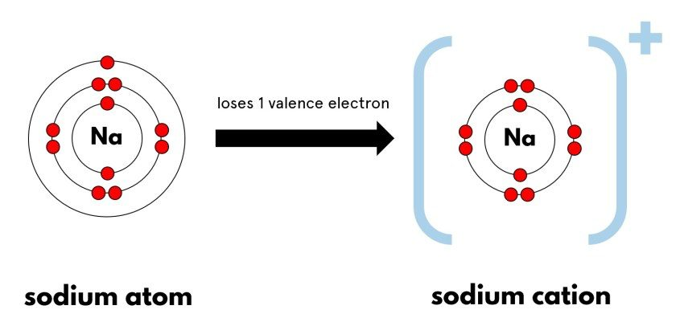
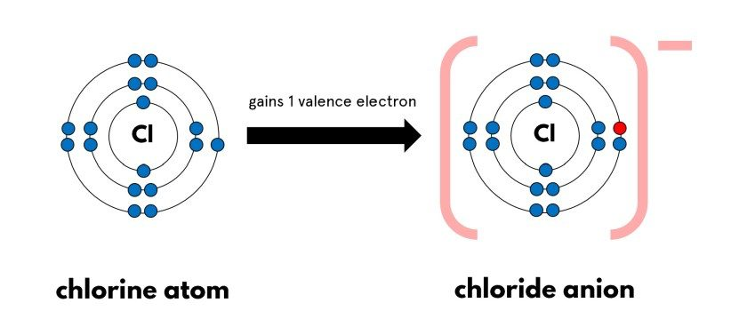
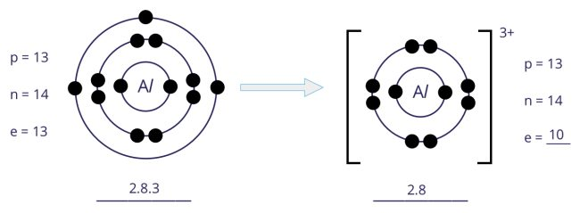
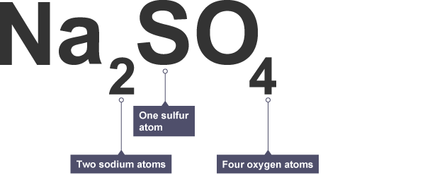
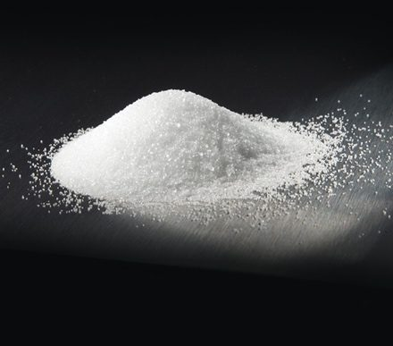
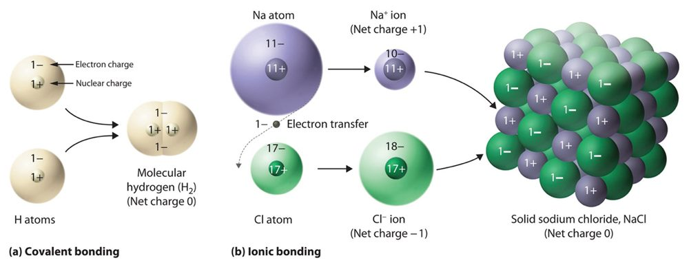

5.1 Ion Formation
Ions are electrically charged particles formed when an atom gains or loses electrons. Atoms tend to reach a stable electron configuration like that of a noble gas, either by gaining electrons to fill their outer shell or by losing electrons to empty it. Gaining or losing electrons turns a neutral atom into a charged ion.
Cations
Metals tend to form positive ions (cations) by losing electrons from their outer shell. Metals usually have only a few electrons in their outer shell, so it is easier for them to give these electrons away and reach a stable configuration.

Anions
Non-metals tend to form negative ions (anions) by gaining electrons. Non-metals often have a larger number of outer shell electrons, so it is easier for them to accept extra electrons than to lose them.

Ions by group (from the slides)
| Group | Outer electrons | What happens | Ion charge | Examples |
|---|---|---|---|---|
| 1 | 1 | loses 1 electron | 1+ | Li+, Na+, K+ |
| 2 | 2 | loses 2 electrons | 2+ | Mg2+, Ca2+, Ba2+ |
| 13 | 3 | loses 3 electrons | 3+ | Al3+ |
| 14 | 4 | rarely forms ions | – | – |
| 15 | 5 | gains 3 electrons | 3− | N3− (nitride), P3− (phosphide) |
| 16 | 6 | gains 2 electrons | 2− | O2− (oxide), S2− (sulfide) |
| 17 | 7 | gains 1 electron | 1− | F−, Cl−, Br−, I− |
| 18 | 8 (full) | does not react or form ions | – | – |
5.2 Ion Formation Practice
For each element, think about the neutral atom, then add or remove electrons using this rule:
- If there are fewer than 4 electrons in the outer shell, remove electrons so the outer shell is empty (the shell underneath becomes the full outer shell).
- If there are more than 4 electrons in the outer shell, add electrons so the outer shell is full.

Complete the table. Write configurations with commas (e.g. 2,8) and charges like 3+ or 2−.
| Symbol | Element | Electron configuration | After adding/removing electrons | Charge | Symbol with charge |
|---|---|---|---|---|---|
| Al | Aluminium | 2,8,3 | 2,8 | 3+ | Al3+ |
| N | |||||
| O | |||||
| P | |||||
| Cl | |||||
| Li | |||||
| Na | |||||
| K | |||||
| Mg |
Using the information above, why do you think sodium and chlorine exist together as a compound?
Sodium (2,8,1) has one outer electron that it loses easily, forming Na+. Chlorine (2,8,7) needs one more electron to fill its outer shell, forming Cl−. When they react, sodium transfers its electron to chlorine, so both get a full outer shell. The oppositely charged ions attract each other in a 1:1 ratio to form sodium chloride, NaCl.
Using the information above, why do you think magnesium and oxygen exist together as a compound?
Magnesium (2,8,2) loses its two outer electrons to form Mg2+, and oxygen (2,6) gains two electrons to form O2−. Magnesium transfers two electrons to oxygen so both have full outer shells, and the oppositely charged ions attract in a 1:1 ratio to form magnesium oxide, MgO.
5.3 Chemical Formula
Chemicals are made of small groups of atoms that are chemically bonded together, called molecules (or, for ionic substances, fixed ratios of ions). These have fixed formulas, with atoms grouped in the same proportions every time.
The chemical formula of a substance is like its ingredient list. It's a short way of saying which elements are present, and how many of each element there are.

Record the number of atoms of each element in each formula, then the total number of atoms.
| Formula | Atoms of each element | Total atoms |
|---|---|---|
| NaOH | Na , O , H | |
| Li2SO4 | Li , S , O | |
| H2COCH2 | H , C , O | |
| Mg(OH)2 | Mg , O , H | |
| (NH4)3PO4 | N , H , P , O | |
| Fe2(CO3)3 | Fe , C , O |
Now let's write the formulas and names of ionic compounds. These compounds are a bit like tiny magnets: they are made of positively and negatively charged ions, and they stick together because opposite charges attract. In ionic compounds, metals and non-metals team up: the metal gives its electrons to the non-metal, creating positive and negative ions. The chemical formula of an ionic compound shows the ratio of these ions.


5.4 Writing Formula
If you know the name of an ionic compound, you can write its chemical formula. Write the metal ion with its charge, then the non-metal ion with its charge. The compound must be electrically neutral, so work out how many of each ion is needed for the positive and negative charges to cancel out.
For each compound, write the ions, the number of each ion needed, and the final formula. Write charges after the symbol, e.g. Na+ or S2-.
| Name | Cation | Anion | No. of cations | No. of anions | Final formula |
|---|---|---|---|---|---|
| Sodium chloride | |||||
| Copper (II) chloride | |||||
| Aluminium oxide | |||||
| Magnesium oxide | |||||
| Iron (III) oxide | |||||
| Magnesium nitride | |||||
| Calcium fluoride | |||||
| Lead (IV) iodide |
5.5 Polyatomic ions
A polyatomic ion is an ion made of more than one atom. The atoms are tightly bonded together, so the whole ion behaves as a single unit.
- The ammonium ion has one nitrogen atom and four hydrogen atoms. Together they form a single ion with a 1+ charge: NH4+.
- The carbonate ion has one carbon atom and three oxygen atoms with an overall charge of 2−: CO32−.
These polyatomic ions are in your valence table:
| Name | Formula | Name | Formula |
|---|---|---|---|
| Hydroxide | OH− | Hydrogen carbonate | HCO3− |
| Nitrate | NO3− | Sulfate | SO42− |
| Permanganate | MnO4− | Carbonate | CO32− |
| Hydrogen sulfate | HSO4− | Phosphate | PO43− |
| Ammonium | NH4+ |
Write the final formula for each compound. Use brackets where needed.
| Name | Cation | Anion | Final formula |
|---|---|---|---|
| Potassium hydroxide | |||
| Copper (II) hydroxide | |||
| Copper (II) carbonate | |||
| Aluminium carbonate | |||
| Calcium carbonate | |||
| Magnesium hydrogen carbonate | |||
| Sodium hydrogen carbonate | |||
| Lead (II) phosphate |
5.6 Naming ionic compounds
Follow these rules when naming ionic compounds:
- Write the name of the positive ion (cation) first.
- If the cation is a transition metal, include Roman numerals to show its charge.
- Write the name of the negative ion (anion) second.
Name each compound. Include Roman numerals for metals with variable charge, e.g. copper (II) carbonate.
| Ionic formula | Name |
|---|---|
| NaCl | |
| CuCO3 | |
| CaF2 | |
| Fe(OH)3 | |
| AlBr3 | |
| KHCO3 | |
| Mg3N2 | |
| Ca(HCO3)2 | |
| Na2S | |
| Cu(OH)2 | |
| Fe2O3 | |
| PbO | |
| CuO | |
| Ag2S |
5.7 Chemical formula review questions
Use the valence table to complete these questions.
Write charges after the symbol, e.g. SO42- or Ni2+.
| Ion name | Ionic symbol | Ion name | Ionic symbol |
|---|---|---|---|
| Sulfate ion | Nickel ion | ||
| F− | N3− | ||
| Hydroxide ion | Phosphate ion | ||
| Iodide ion | Potassium ion | ||
| Carbonate ion | Silver ion | ||
| NH4+ | Na+ | ||
| Hydrogen sulfate ion | Tin (II) ion | ||
| Nitrate ion | Zinc ion |
| Compound | Positive ion | Negative ion | Formula |
|---|---|---|---|
| Potassium chloride | |||
| Calcium carbonate | |||
| NH4+ | OH− | ||
| Potassium nitrate | |||
| Copper (II) fluoride | |||
| Cr3+ | NO3− | ||
| Iron (II) sulfide | |||
| Sulfuric acid | H+ | SO42− | |
| Nitric acid | H+ | NO3− | |
| Aluminium oxide | |||
| Silver fluoride | |||
| NH4Br | |||
| Na2S | |||
| Copper (I) phosphate |
| Compound | Positive ion | Negative ion | Formula |
|---|---|---|---|
| Ag+ | NO3− | ||
| CuCO3 | |||
| Magnesium sulfate | |||
| H+ | Br− | ||
| FeSO4 | |||
| Pb4+ | O2− | ||
| Zinc sulfide | |||
| Chromium (III) phosphate | |||
| Tin (II) nitrate | |||
| Lead (II) iodide | |||
| Ammonium sulfate | |||
| Nickel fluoride | |||
| Tin (IV) sulfate | |||
| Mercury hydroxide |
All of these formulas are incorrect. Write the correct formula.
| Incorrect | Correct |
|---|---|
| naCL (sodium chloride) | |
| Cas (calcium sulfide) | |
| Mg4SO (magnesium sulfate) | |
| NH3OH (ammonium hydroxide) | |
| PbP4O (lead (II) phosphate) | |
| Fe(NO3)4 (iron (III) nitrate) | |
| ZNf2 (zinc fluoride) | |
| AgBR3 (silver bromide) |
Symbols need a capital first letter and a lower-case second letter, and the charges must balance. For example, Ag+ and Br− combine 1 : 1, so silver bromide is AgBr.
| Formula | Name |
|---|---|
| NH4F | |
| AlI3 | |
| K3PO4 | |
| Ag2CO3 | |
| Hg(OH)2 | |
| MgSO4 | |
| Pb(NO3)2 | |
| SnO |
The booklet lists "PbNO3", which can't be balanced with Pb2+. Lead (II) nitrate is Pb(NO3)2.
Write the formula of the compound formed by each pair of ions.
| Br− | NO3− | Cl− | O2− | SO42− | CO32− | PO43− | |
|---|---|---|---|---|---|---|---|
| Na+ | |||||||
| NH4+ | |||||||
| Ca2+ | |||||||
| Pb2+ | |||||||
| Zn2+ | |||||||
| Mg2+ | |||||||
| Fe3+ | |||||||
| Al3+ |